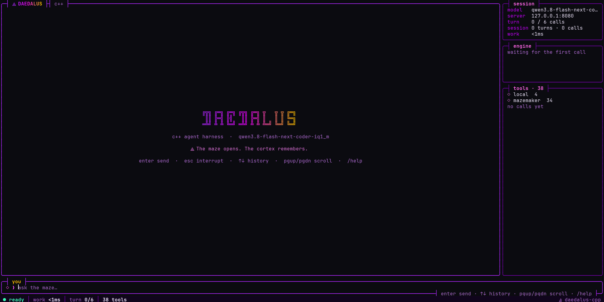
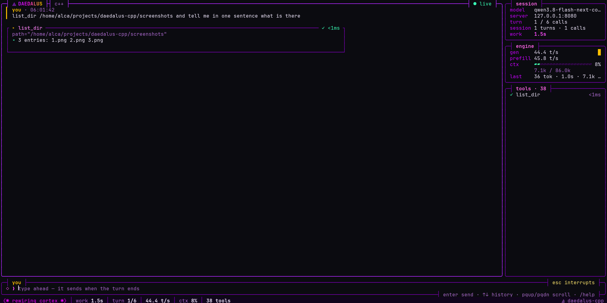
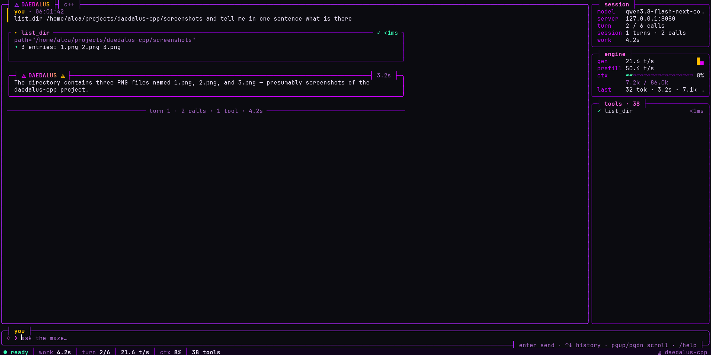
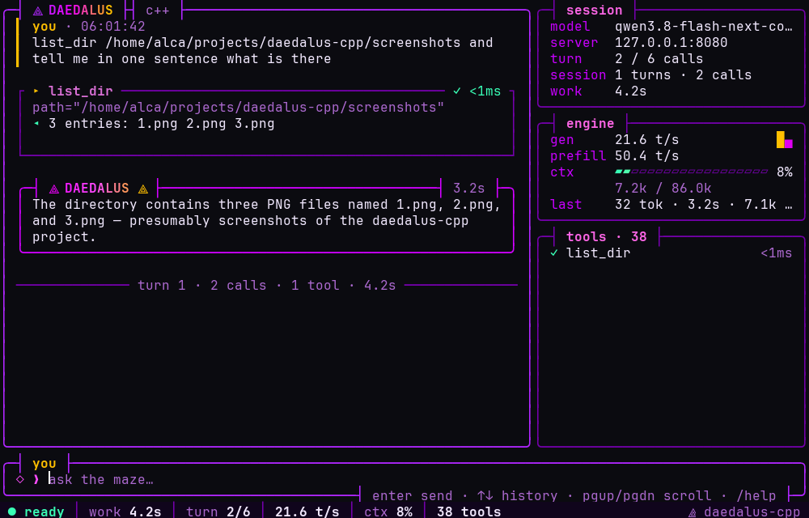
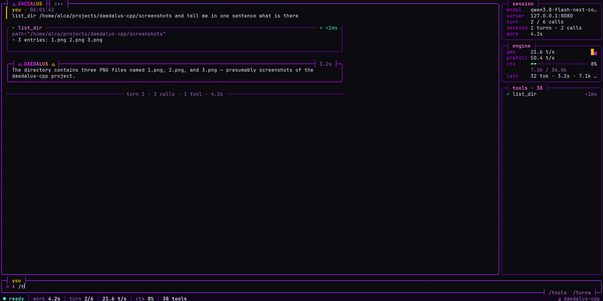
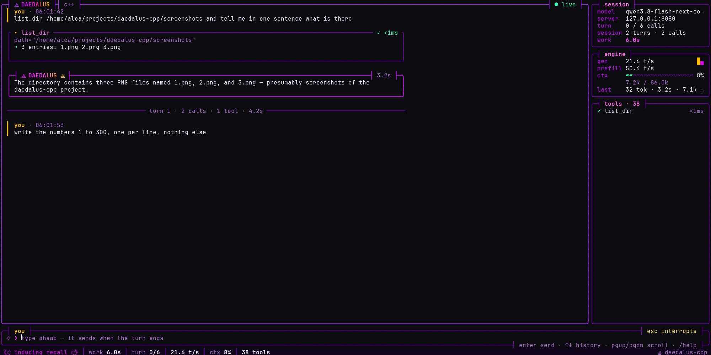
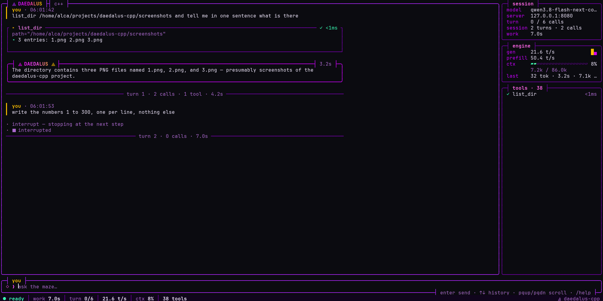
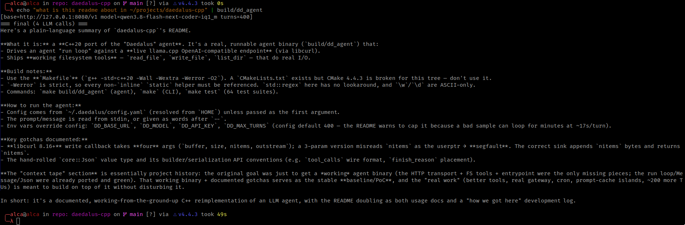

⟁ DAEDALUS ⟁ daedalus-cpp
TL;DR: C++20 port of the Daedalus agent harness. Plain g++ + Makefile
(-std=c++20 -Wall -Wextra -Werror -O2 -Iinclude — CMake 4.4.3 is broken for this tree, the Makefile is the source of truth).
One real agent binary (build/dd_agent) that drives the ported run loop over a live llama.cpp OpenAI endpoint via libcurl,
with working read_file/write_file/list_dir tools doing real I/O — and the full harness kit build/dd_tui:
a lockfree, SIMD'd terminal UI that renders every call.
The tools — wired in, all real
Every tool the model can call is registered live: the core four ship compiled-in; the remaining
34 are discovered at startup from the mazemaker pod through MCP tools/list, each with its real
inputSchema. The server's initialize instructions — the MAZEMAKER MEMORY PROTOCOL
(recall-first, persist-after-turn) — are appended to agent.system_prompt. That is what makes recall-first behavior real, not simulated.
Core four — compiled in, real filesystem I/O
sudo, su, recursive rm on /·~·*, mkfs, dd, shutdown/reboot, curl-pipe-shell, force-push, …;
extra words via config command_denylist). Runs { cmd; } </dev/null 2>&1 so a child never reads the raw-mode tty.
It is a guard, not a jail — do not treat it as sandboxing.The mazemaker pod — 34 live MCP tools (registered at startup)
Full harness kit — build/dd_tui
make build/dd_tui build/dd_tui # interactive REPL (you> ), config from ~/.daedalus build/dd_tui path/to/config.yaml -- "msg" # single-shot
Same run loop (Agent::run) as dd_agent — no fork of the loop, one step_hook added to
agent.hpp/.cpp for per-step streaming. Next-gen OOP TUI (dd::ui: double-buffered cell-diff Frame +
Widget subclasses + Scene row layout):
- Fixed geometry: transcript panel | 34-col sidebar (
session,engine,tools) over a 3-row prompt box and a status row; rounded panels with titles set into the border; sidebar drops under 100 cols; under 60×14 the screen says so. - Cards: user = gold bar · answer = rounded
⟁ DAEDALUS ⟁box with the call latency · tool = square card of fixed height (name, statusqueued/spinner/✓ 1.2s/✗, flattened args, two-line result preview) · notes, errors, and a rule closing each turn (turn 3 · 4 calls · 2 tools · 41.2s). - Skins: colours, spinner wings, thinking verbs and branding from
~/.daedalus/skins/<display.skin>.yaml(neural defaults built in). Truecolor whenCOLORTERM=truecolor|24bit, else xterm-256. - Engine stats are real: per-call llama-server
timings(gen/prefill t/s,cache_n) andusage;n_ctxfrom/propsonce at start (the ctx meter). - Render:
Canvas(16-byte padding-freeCell, wide-glyph aware) →Frame::present()diffs against the last frame and emits only changed cells, inside synchronized output (?2026) on the alternate screen. An unchanged frame writes nothing. - Threads, no locks: worker and tool threads only
pushevents into a Vyukov MPSC queue (one atomic exchange); the render thread owns every bit of scene state and drains the queue each frame.interrupt_requestedisstd::atomic<bool>and doubles as the libcurl abort flag — Esc cancels an LLM call in flight (measured 0.86 s from Esc to ready during a live generation). - SIMD + OpenMP (
dd/ui_simd.hpp): cell diff, ASCII scan/width/widen as AVX-512 (F+BW+VL) / AVX2 / scalar kernels, picked once by CPUID — one binary for every box. Rows encode in parallel on big frames, cards re-wrap in parallel after a resize; small frames stay serial so the TUI never wakes threads on cores the model uses.tests/ui_test.cppchecks each kernel set the CPU has against scalar, and 1-thread vs 8-thread frames byte for byte. (AVX-512 set hasn't run on hardware yet — Zen 2 here, QEMU TCG has none.) - Input: raw
termios(restored on exit and fatal signals), CSI/SS3 keys, bracketed paste, SGR mouse wheel (DD_TUI_MOUSE=0leaves the mouse to the terminal), UTF-8 line editing, history. Enter sends (while busy: queued for end of turn), Esc/Ctrl-C interrupt, PgUp/PgDn or wheel scroll, Tab completes/help /tools /turns N /clear /interrupt /quit, Ctrl-L redraws. stderr goes to~/.daedalus/logs/dd_tui.logwhile the screen is up. - No tty (
-- msgor piped stdin): the same cards print inline, in order.
Verified smoke (DD_MAX_TURNS=4, local IQ1 model ≈17 s/turn + ≈22 s/recall): registers 34 mazemaker tools,
the model answers "as required by the memory protocol", issues mazemaker_recall, and the round-trip returns
live memory (top hit sim 0.54). Transport lives in src/tools/mcp.hpp / src/tools/mcp_client.cpp.
Gallery — the TUI, live




turn N · calls · tools · time




Build & run
make build/dd_agent # agent binary (links -lcurl) make # build/dd (CLI entry) make test # 64 test suites
build/dd_agent # msg on stdin, config from ~/.daedalus/config.yaml build/dd_agent path/to/config.yaml -- hello # config arg, then -- , then message words echo "list files in /tmp/ using list_dir" | build/dd_agent
Output: a [base=... model=... turns=...] header, then === final (N LLM calls) === plus the assistant's final answer.
No Python Daedalus on the box? mkdir -p ~/.daedalus/logs && cp examples/daedalus/config.yaml ~/.daedalus/ —
that file is the whole config (model, turns, skin, MCP, denylist).
| Env | Overrides |
|---|---|
DD_BASE_URL | model.base_url — must end /v1; the code POSTs /chat/completions |
DD_MODEL | model.name |
DD_API_KEY | model.api_key (llama.cpp needs none) |
DD_MAX_TURNS | agent.max_turns — config default 400, cap it: a bad sample loops for minutes (~17 s/turn on the local model) |
Gotchas that bit once
libcurl 8.16+ calls the write callback with four args — fn(char*, size_t, size_t nitems, void*)
(curl.h:285), not the classic three. A 3-param sink reads nitems (a byte count) as the userptr →
SIGSEGV. Correct form appends nitems and returns it:
static std::size_t curl_sink(char* buffer, std::size_t size, std::size_t nitems, void* ud) {
auto* s = static_cast<std::string*>(ud);
s->append(buffer, nitems);
return nitems; // return != nitems => CURLE_WRITE_ERROR
}
- CMake is 4.4.3 and broken here. The
Makefileis the source of truth; aCMakeLists.txtexists but is not the working path. -Werror=unused-functionis strict: every non-inlinestatichelper must be referenced in its TU. Preferinline/constexpr.std::regexhere gets no lookaround;\w/\dare ASCII-only.core::Jsonis a hand-rolled value type (Type{Null,Bool,Num,Str,Arr,Obj},JsonSP = shared_ptr<Json>): init-lists takeJsonSP(wrap withjsp(...)),arr_push/obj_settake a bareJson, read size before a move. Wirefinish_reasonis a sibling ofmessageonchoices[0].
The whole deal — context tape
- Seed. One plain goal: a running
int main()agent driving the already-ported run loop against the real llama.cpp endpoint — libcurl transport + real FS tools. - Ported base, not rewritten. Run loop,
core::Message,core::Json, tool registry were already green (64 suites). Only the missing leaves got written: HTTP transport, FS handlers, entrypoint. - Scale. Long evolution, heavy tool churn, one hard crash (the libcurl 4-arg callback SIGSEGV) burned most of the tokens — then the 4-param sink fix, a clean
-Werrorrebuild, live smoke. - Proof of concept. Working binary + documented gotchas + verified smoke = the PoC baseline. Everything open now builds on top of it without disturbing it.
The four-prompt story — whataboredome, the bug worth its own header, and what it deliberately doesn't do — is in BLOG.md.